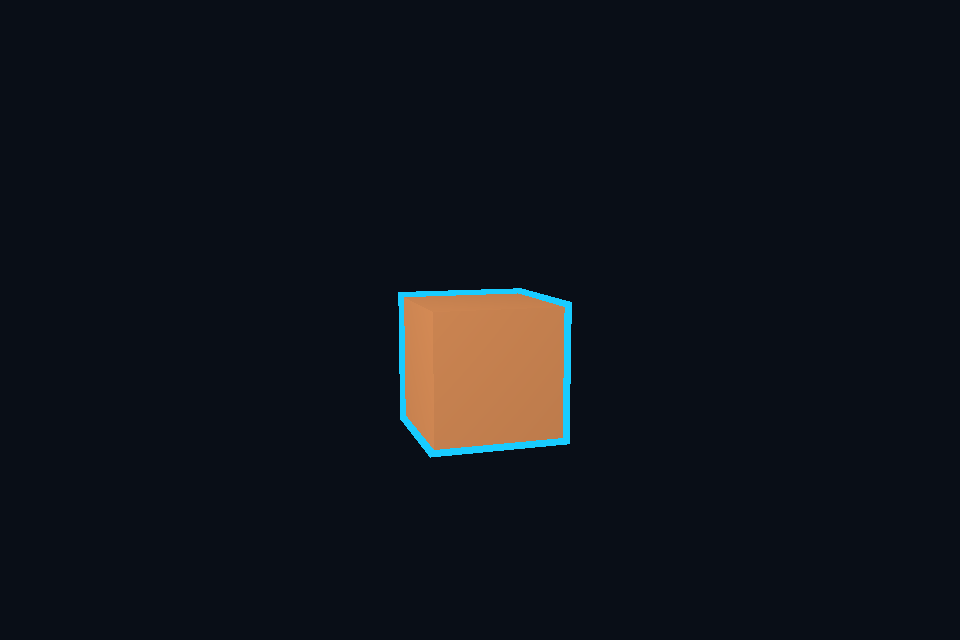

第 17 课：模板测试与描边
课程首页 · 上一课 · 下一课
目标与运行
cd OpenGL
.\scripts\run.ps1 -Lesson 17_stencil
预期画面：旋转立方体外侧有清晰蓝色描边。
相机：W/A/S/D 移动，Q/E 升降，按住右键转向，Esc 退出。
代码阅读顺序
main.cpp 的两遍对象绘制 → RenderTarget 的 DEPTH24_STENCIL8
从本课 main.cpp 进入；公共工具在 common，GLSL 在 shaders。先画出每一遍读什么、写什么，再逐个展开辅助类。
原理与实现
模板缓冲存每像素整数标记。第一遍普通绘制时 glStencilFunc(GL_ALWAYS,1,0xFF)，模板操作 GL_KEEP,GL_KEEP,GL_REPLACE：只有深度通过的片段写标记 1。深度失败时不能替换，否则遮挡物后面的形状也可能留下标记。
第二遍将模型放大 1.08 倍，用纯色绘制，glStencilFunc(GL_NOTEQUAL,1,0xFF) 只保留原模型覆盖区之外的像素。glStencilMask(0) 禁止覆盖已有标记，暂时关闭深度测试让轮廓不被原模型挡住。本例单物体适合入门；复杂遮挡和固定屏幕宽度轮廓需要更仔细设计。
默认窗口不一定提供模板附件，所以本课显式创建含深度/模板附件的离屏 FBO，最后再呈现颜色。每帧恢复模板写掩码 0xFF 后清除 stencil；清除操作受 mask 影响，前一帧 mask=0 而忘恢复会导致残留。
模型膨胀法的轮廓宽度随距离和曲率变化，并非像素恒定的描边。法线挤出、屏幕深度/法线边缘检测是不同方案，不要把这一课的技巧当成万能轮廓系统。
修改练习
改变膨胀倍数；增加第二个互相遮挡的物体；试着保留深度测试，比较轮廓。
修改后重新执行 cmake --build build --config Debug --target 17_stencil --parallel。GLSL、模型、图片会复制到程序旁的 shaders/assets 目录。源文件应修改教程根目录下的版本，运行目录的副本会被下一次构建覆盖。
自测与参考答案
为什么需要清除模板而且恢复写掩码？
旧帧的标记不再对应新帧位置；mask 为 0 时清除也可能无效。
检查与排错
运行 17_stencil.exe --smoke 可执行确定时间的四帧渲染检查。重要技术开关还可用 --smoke --variant --capture 与默认抓图对比。共享工具会检查 GL 错误、非背景像素和图像动态范围，但这不能代替人工核对技术含义。参见 进阶排错。
参考截图
以下为课程自带素材、固定时间 1 秒时的实际渲染；你的相机与操作改变后画面会不同。
